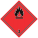

propan-1-ol CAS No.: 71-23-8 EC No.: 200-746-9 |
LC50: 4,555mg/L 4d (fish, Pimephales promelas) |
LC50: 4,555mg/L 4d (fish, Pimephales promelas Activated sludge) |
LC50: 4,555mg/L 4d (fish, Pimephales promelas) OECD Guideline 203 (Fish, Acute Toxicity Test) |
LC50: 1,000mg/L 2d (crustaceans, Gammarus pulex) |
EC50: >1,000mg/L (Belebtschlamm) |
EC50: 3,644mg/L 2d (fish, Daphnia magna) |
EC50: >1,000mg/L (Algae/water plant, Activated sludge) |
EC50: 9,170mg/L 2d (Algae/water plant, Raphidocelis subcapitata (previous names: Pseudokirchneriella subcapitata, Selenastrum capricornutum)) |
EC50: 3,644mg/L 2d (crustaceans, Daphnia magna) DIN 38412 Part 11, Daphnia- Short term test |
NOEC: >100mg/L 21d (Algae/water plant, Daphnia magna) |
NOEC: 1,150mg/L 2d (Algae/water plant) |
NOEC: 68.3mg/L 21d (fish, Daphnia magna) |
NOEC: 1,150mg/L 2d (Algae/water plant, Chlorella pyrenoidosa) |
ethanol CAS No.: 64-17-5 EC No.: 200-578-6 |
LC50: 12,340mg/L 2d (Daphnia magna) |
LC50: 275mg/L 3d |
LC50: 14,200mg/L 4d (fish, Pimephales promelas) US EPA method E03-05 |
LC50: 5,012mg/L 2d (crustaceans, Ceriodaphnia dubia) ASTM E729-80 |
EC50: 1,806mg/L (ceriodaphnia dubia, Chlorella vulgaris) OECD 201 |
EC50: 275mg/L 3d (Algae/water plant, Chlorella vulgaris) OECD Guideline 201 (Alga, Growth Inhibition Test) |
EC50: 675mg/L 4d (Algae/water plant, Chlorella vulgaris) OECD Guideline 201 (Alga, Growth Inhibition Test) |
EC50: 12,900mg/L 4d (fish, Pimephales promelas) US EPA method E03-05 |
NOEC: 4,432mg/L (ceriodaphnia dubia) |
NOEC: 2mg/L 10d (crustaceans, Ceriodaphnia dubia) |
Dipropylene glycol monomethyl ether CAS No.: 34590-94-8 EC No.: 252-104-2 |
LC50: >1,000mg/L 4d (fish, Poecilia reticulata) |
LC50: >1,000mg/L 2d (crustaceans, Crangon crangon) EPA OPP 72-3 (Estuarine/Marine Fish, Mollusk, or Shrimp Acute Toxicity Test) |
LC50: >1,000mg/L 3d (crustaceans, Crangon crangon) EPA OPP 72-3 (Estuarine/Marine Fish, Mollusk, or Shrimp Acute Toxicity Test) |
LC50: >1,000mg/L 4d (crustaceans, Crangon crangon) EPA OPP 72-3 (Estuarine/Marine Fish, Mollusk, or Shrimp Acute Toxicity Test) |
EC50: >969mg/L 3d (Algae/water plant, Raphidocelis subcapitata (previous names: Pseudokirchneriella subcapitata, Selenastrum capricornutum)) |
EC50: >969mg/L 4d (Algae/water plant, Raphidocelis subcapitata (previous names: Pseudokirchneriella subcapitata, Selenastrum capricornutum)) |
NOEC: 969mg/L 3d (Algae/water plant, Raphidocelis subcapitata (previous names: Pseudokirchneriella subcapitata, Selenastrum capricornutum)) |
NOEC: 969mg/L 4d (Algae/water plant, Raphidocelis subcapitata (previous names: Pseudokirchneriella subcapitata, Selenastrum capricornutum)) |
LOEC: 0.5mg/L 22d (crustaceans, Daphnia magna) |
propan-1-ol CAS No.: 71-23-8 EC No.: 200-746-9 |
Biodegradation: Yes, rapidly |
ethanol CAS No.: 64-17-5 EC No.: 200-578-6 |
Biodegradation: Yes, rapidly |
en / DE GeSi.de
propan-1-ol CAS No.: 71-23-8 EC No.: 200-746-9 |
Log KOW: 0.2 |
Bioconcentration factor (BCF): 0.88 |
ethanol CAS No.: 64-17-5 EC No.: 200-578-6 |
Log KOW: -0.31 |
Bioconcentration factor (BCF): 3.2 |
Dipropylene glycol monomethyl ether CAS No.: 34590-94-8 EC No.: 252-104-2 |
Log KOW: 0.004 |
propan-1-ol CAS No.: 71-23-8 EC No.: 200-746-9 |
Results of PBT and vPvB assessment: This substance does not meet the PBT/vPvB criteria of REACH, Annex XIII. |
ethanol CAS No.: 64-17-5 EC No.: 200-578-6 |
Results of PBT and vPvB assessment: This substance does not meet the PBT/vPvB criteria of REACH, Annex XIII. |
Dipropylene glycol monomethyl ether CAS No.: 34590-94-8 EC No.: 252-104-2 |
Results of PBT and vPvB assessment: This substance does not meet the PBT/vPvB criteria of REACH, Annex XIII. |
Land transport (ADR/RID) | Inland waterway craft (ADN) | Sea transport (IMDG) | Air transport (ICAO-TI / IATA-DGR) |
14.1. UN number or ID number | |||
UN 1987 | UN 1987 | UN 1987 | UN 1987 |
14.2. UN proper shipping name | |||
ALCOHOLS, N.O.S. (propan-1- ol, ethanol) | ALCOHOLS, N.O.S. (propan-1- ol, ethanol) | ALCOHOLS, N.O.S. (propan-1- ol, ethanol) | ALCOHOLS, N.O.S. (propan-1- ol, ethanol) |
14.3. Transport hazard class(es) | |||
3 | 3 | 3 | 3 |
14.4. Packing group | |||
III | III | III | III |
Land transport (ADR/RID) | Inland waterway craft (ADN) | Sea transport (IMDG) | Air transport (ICAO-TI / IATA-DGR) |
14.1. UN number or ID number | |||
UN 1987 | UN 1987 | UN 1987 | UN 1987 |
14.2. UN proper shipping name | |||
ALCOHOLS, N.O.S. (propan-1- ol, ethanol) | ALCOHOLS, N.O.S. (propan-1- ol, ethanol) | ALCOHOLS, N.O.S. (propan-1- ol, ethanol) | ALCOHOLS, N.O.S. (propan-1- ol, ethanol) |
14.3. Transport hazard class(es) | |||
3 | 3 | 3 | 3 |
14.4. Packing group | |||
III | III | III | III |
Land transport (ADR/RID) | Inland waterway craft (ADN) | Sea transport (IMDG) | Air transport (ICAO-TI / IATA-DGR) |
14.1. UN number or ID number | |||
UN 1987 | UN 1987 | UN 1987 | UN 1987 |
14.2. UN proper shipping name | |||
ALCOHOLS, N.O.S. (propan-1- ol, ethanol) | ALCOHOLS, N.O.S. (propan-1- ol, ethanol) | ALCOHOLS, N.O.S. (propan-1- ol, ethanol) | ALCOHOLS, N.O.S. (propan-1- ol, ethanol) |
14.3. Transport hazard class(es) | |||
3 | 3 | 3 | 3 |
14.4. Packing group | |||
III | III | III | III |

